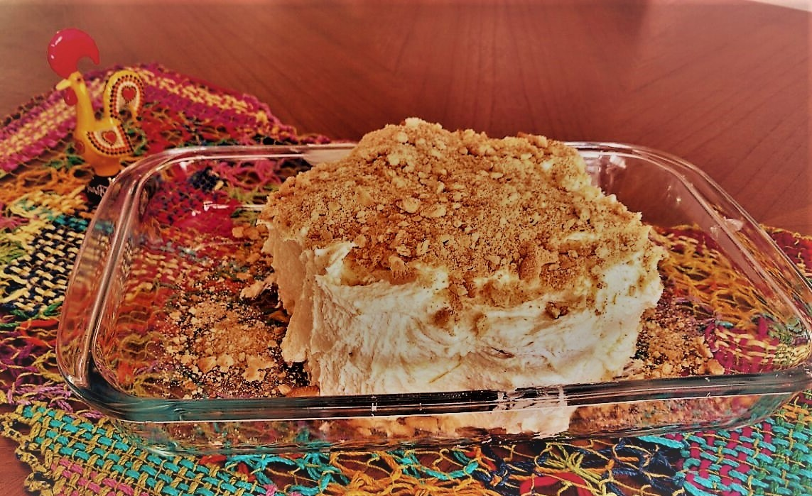

Receita de Bolo de Bolacha

Bolo de Bolacha
Ingredientes
- 400 gramas de bolacha Maria
- 200 gramas de manteiga
- 3 gemas
- 200 gramas de açúcar
- café forte e adoçado (suficiente para molhar as bolachas)
- bolhachas e grãos de café para decorar
Modo de Preparo
- Bata a manteiga, o açúcar e as gemas até formar um creme
- Molhe as bolachas no café morno (cuidado para que elas não derretam)
- Forme uma flor com 7 bolachas molhadas em um prato para bolo
- Passe uma camada de creme sobre as bolachas e repita este processo até terminarem as bolachas
- Cubra todo o bolo com o restante do creme
- Leve à geladeira por pelo menos duas horas antes de servir
Informações Nutricionais
| Nutrientes |
Porção 1 fatia (100g) |
| Calorias kcal |
388 |
| Proteínas g |
3,9 |
| Carboidratos g |
46,3 |
| Lípidios g |
20,7 |
Érica Lima 2017